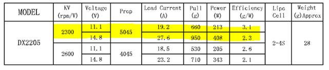

Problem Overview
Background
The Mars Rover Challenge is hosted annually at the Mars Desert Research Station (MDRS) in Utah. Teams are tasked with designing a rover to complete a range of challenges, from dexterity using a robotic arm to traversing a rocky terrain. My task was to design the enclosure that would house the electronics onboard the rover.
UW Robotics Team 2019
Mars Rover in Desert Conditions
Strategy
Research
This project was designed for the UW Robotics Team, which competes at the University Rover Challenge (URC) in Utah. The project began by studying the environmental challenges faced by the rovers competing in this challenge, focusing on protecting sensitive electronics from extreme temperatures, dust, and vibrations. Research included material selection for thermal management, sealing techniques for dust protection, and shock-absorbing methods to withstand harsh terrain. NASA rover designs were reviewed to understand best practices in space-grade enclosures, while considerations for manufacturability and weight constraints were critical due to the rover’s operational needs.
Development
Conceptual Design
The conceptual design revolved around a lightweight, ruggedized enclosure capable of protecting PCBs, sensors, and other electronic components from the Mars-like environment. The enclosure was designed to be formed using sheet metal by the competition sponsor, Protocase. It featured internal compartments for optimal component arrangement and integrated heat sinks for passive thermal dissipation. A sealing system using gaskets ensured dust resistance, while the external surface was structured for mounting on the rover's chassis.


Development
Detailed Design & Analysis
The first prototype was created to test the electronics. At this stage, motor performance testing was performed and the connections were verified.
Troubleshooting
The first prototype was designed for simplicity - a flat plate with attachments for the motors. This would allow me to get a feel for the space required for the electronics and spacing of the propellers. After running the motors,
it was clear that there was an issue - one of the motors would not run. There was an audible beep as if it was powered, but when it was signalled it did not respond. Using a multimeter I tested the voltage to the ESC, current
from the Arduino, and current to the motor. From this, it was clear that one of the ESCs was broken.
I removed the cover from the ESC and checked the board for damage, but found nothing. The connections between
components on the board seemed to check out however the motor would still not run. I figured there was an issue with the ESC on-board firmware and thus I requested a replacement.

Assembled Prototype
Motor Testbench
Manufacturing
Results
The final design was then created and 3D-printed.
Assembly
The final design was then created in Solidworks, with an aim to be easy to 3D print and assemble. The enclosure was entirely 3D printed and uses screws and nuts that I had from a previous project for attaching the top and
bottom together.
In CAD, all of the internal components fit compactly within the body, however during assembly it was clear I overlooked on crucial part - the wires themselves. Dupont wires commonly used for
arduino projects stick up very high from the board, and end up taking a lot of space. This meant I had to shift the battery off center to fit everything within the build. While the final prototype looked good from the
outside, the center of gravity was shifted. It is later revealed through testing that this would not allow the drone to take off.
Testing
I ran the test several times, adjusting the internal layout of components between tests. The motors were set to gradually increase in rpm, and slow down once the LiDAR detected that it was off the ground. Since the weight was not centered, the motors were not able to adjust the tilt of the quadcopter based on the gyroscope readings, and thus the quadcopter tipped over.

Final Design CAD

Final Assembly
Moving Forward
Takeaway
I am currently working on redesigning the enclosure to have a larger capacity and defined mounting for the internal components. I will ensure that the CG is properly centered in CAD prior to assembly and run more tests of the prototype vehicle.